VAROSHA
Rotory International Service Summit
On Febuary 10, 2018, Varosha was one of 30 Exhibitors at the first Rotary International Service Summit. It was a wonderful opportunity for us to connect with other nonprofits doing incredible work throughout the world. So many people took great interest in our activities. It was an inspiring day and we look forward to learning from, working with and sharing our experiences with these outstanding groups. We are very grateful to Rotary for arranging the summit and giving Varosha a platform.
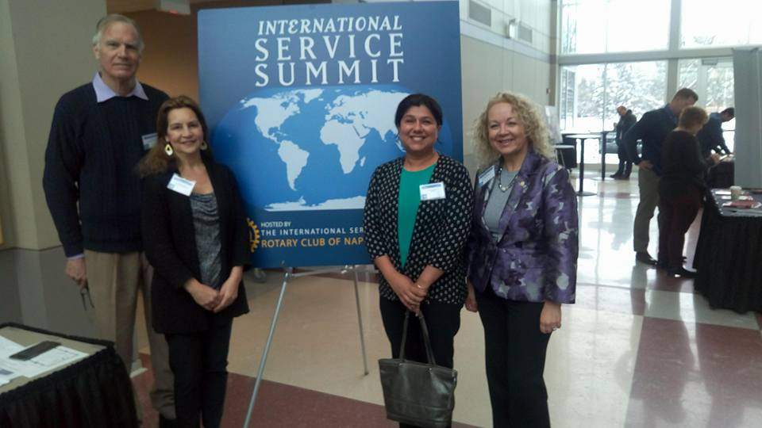

 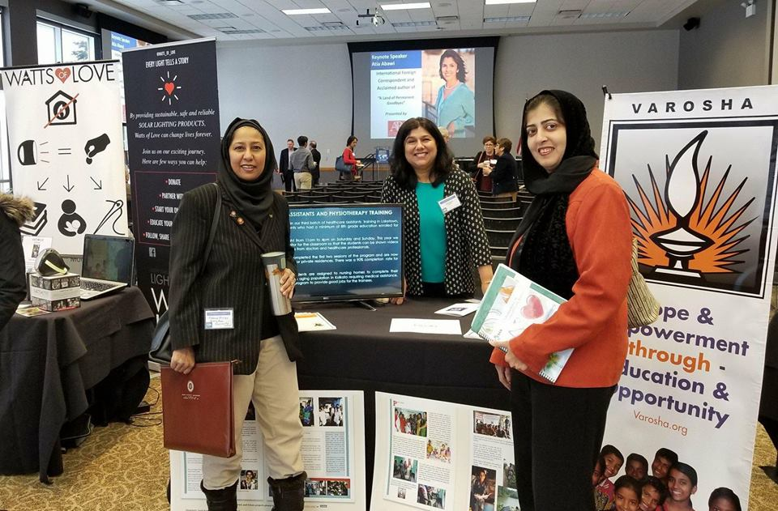
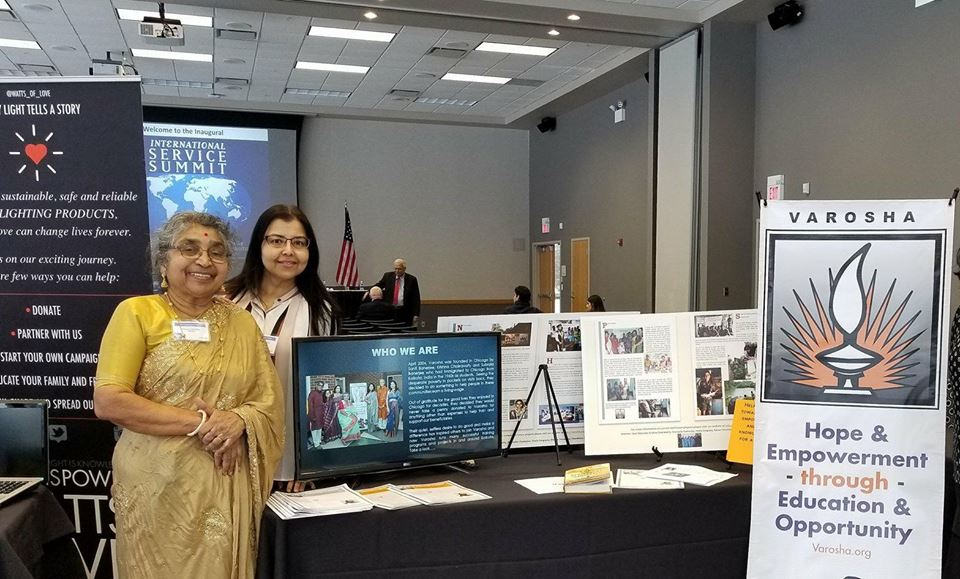
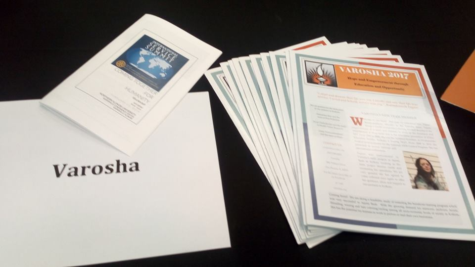
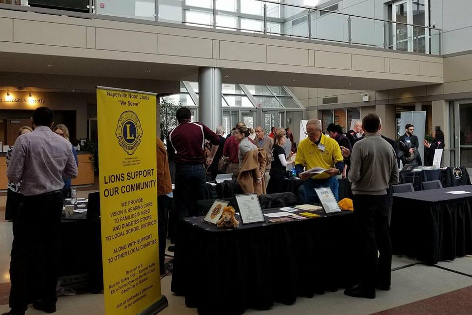
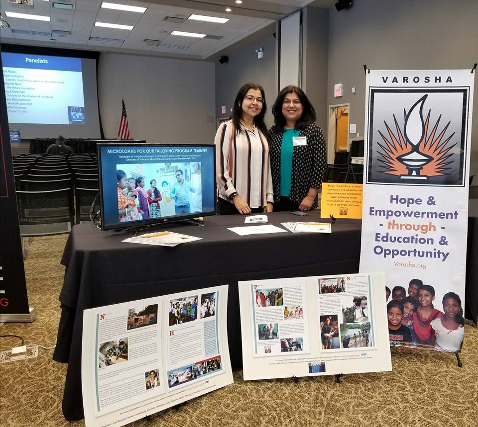
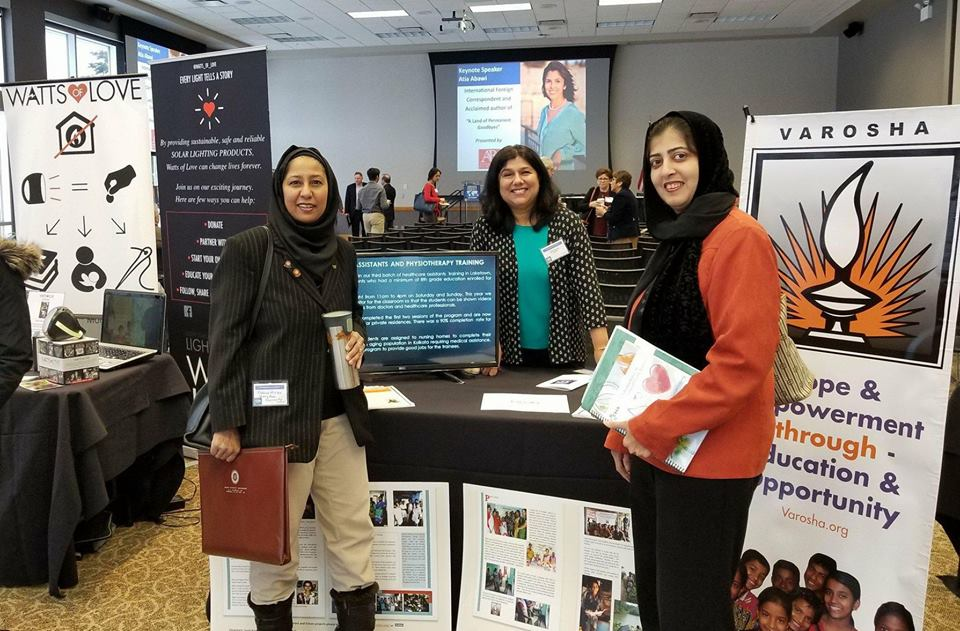
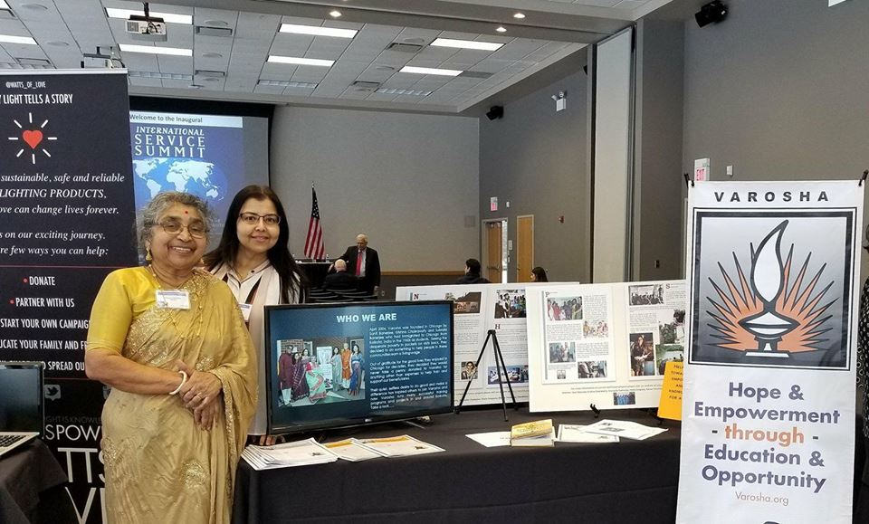
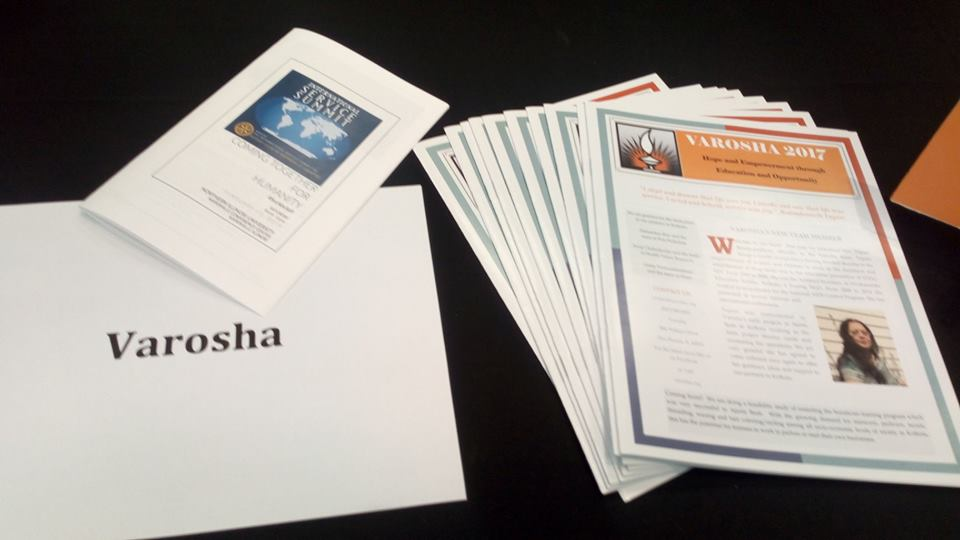
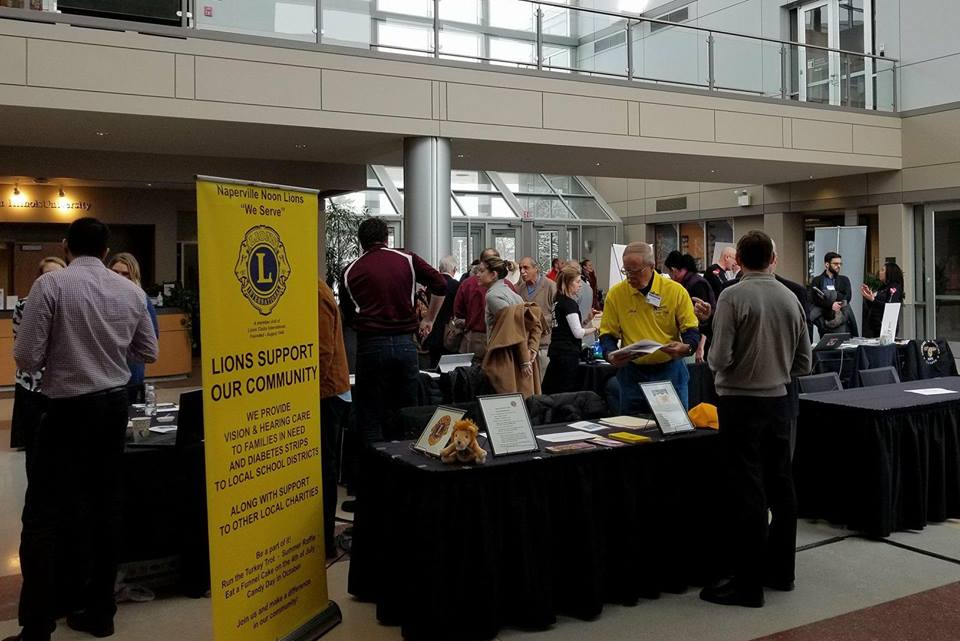
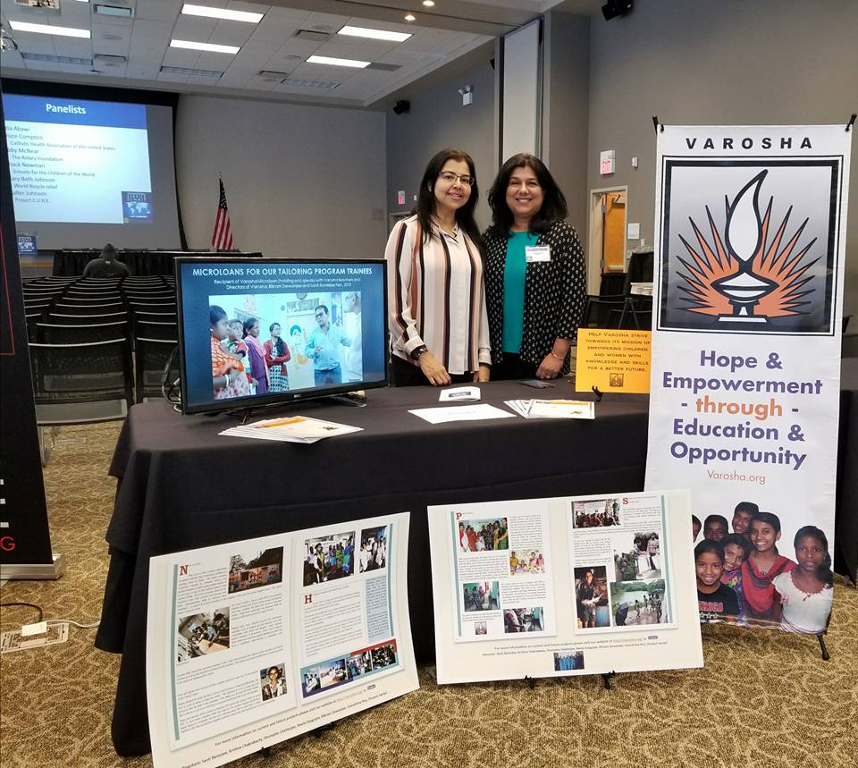